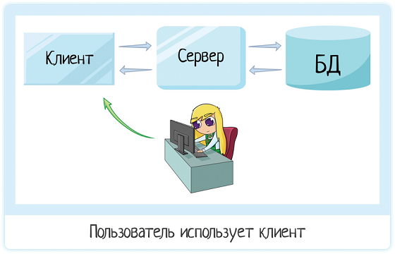
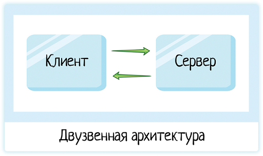

Знакомая картинка? А вы ведь постоянно сталкиваетесь с этой архитектурой — когда покупаете билет в кино
онлайн,
бронируете путевку
на море или записываетесь к врачу.
На клиент-серверной архитектуре построены все сайты и интернет-сервисы. Также ее используют
десктоп-программы,
которые передают данные
по интернету. Поэтому ИТ-специалисту нужно понимать, что это такое и как работает.
Об этом я и расскажу в статье. Объясню на пальцах, с примерами и забавными картинками. Если вы больше любите
видео-формат, можно посмотреть
ролик на youtube на ту же тему.
Тут все просто — с клиентом работает пользователь. Он нужен, чтобы превратить байтики программного кода в красивую и понятную картинку. Пользователь — не программист, он не понимает язык программирования или sql. Он понимает формочки и кнопочки. Их в клиенте и рисуем.

Мы ведь хотим, чтобы приложение работало быстро. Чтобы оно не тупило и не зависало, нервируя операциониста
и заставляя клиента ждать. Значит, машина нужна мощная. Но если делать мощным каждый компьютер
операциониста, денег придется вложить очень много!
Поэтому мы выносим всю основную логику на сервер. И вот его уже делаем мощным! А клиентские машины
могут быть дешевыми, потому что на них остается лишь логика в стиле «запросить информацию и красиво
отрисовать».
Если бы у нас были только клиентские машины, на каждой из них хранился бы одинаковый код по обработке
логики, лежала вся база данных, все справочники террористов и прочая. Но так как сервер и БД вынесены в
отдельные звенья, с клиентской машины освобождается куча места… И кода.
Не надо дублировать код, ведь вся основная логика вынесена на более мощный сервер.
При чем же тут БД? Вот у нас есть наш сервер, пусть он и хранит всю информацию. Бывает и так, иногда база просто не нужна и у нас остается двузвенная архитектура клиент-сервер.

В таком случае все данных сервер хранит в памяти. Вот только если сервер упадет, или просто
перезагрузится — вся информация будет потеряна. Все, что было в памяти, стирается при выключении
системы.
БД (база данных) — отдельный программный продукт, который позволяет:
Да, базы может не быть. Но когда она есть, мы уверены в сохранности данных и легко можем по ним поискать.
Преимущества и недостатки клиентно-серверной архитектуры
| ПРЕИМУЩЕСТВА | НЕДОСТАТКИ |
|---|---|
| Выполнение бОльшей части работы мощной серверной частью при минимуме нагрузки на клиента. | Выход из строя сервера может привести к неработоспособности всей системы, его использующей |
| Основная часть данных хранятся на сервере. При этом, как правило, он лучше защищён от различного вида угроз, чем обычный клиентский ПК. | Высокая стоимость серверного оборудования и его обслуживания (в частности, может потребоваться отдельный специалист для обслуживания). |
| Возможность более чёткого разграничения полномочий доступа к разным уровням информационной системы. Каждому клиенту — свой уровень доступа. | Высокая нагрузка на серверное оборудование и канал связи до него. |
| Кроссплатформенность. Проще говоря, любой клиент может работать с ресурсами сервера вне зависимости от используемой операционной системы. | |
| Уменьшение нагрузки на сеть ввиду того, что клиент в основном передаёт серверу команды, а тот уже их исполняет. |